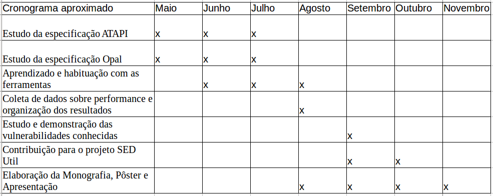

Esse trabalho de conclusão de curso visa o estudo de mecanismos de criptografia de dispositivos de memória não-volátil utilizando ferramentas como LUKS e SEDutil em HDDs e SSDs (quando providos de suporte Opal 2.0 ou superior). Pretendemos estudar a fundo esses mecanismos, coletar dados e analisar suas performances, além de estudar e demonstrar na prática algumas das vulnerabilidades conhecidas.
A criptografia vem se tornando cada vez mais popular e difundida na sociedade. Tanto em âmbitos acadêmicos quanto populares, ela aparece como objeto de estudo e de segurança da informação. Casos recentes, como a publicação de dados da NSA por Edward Snowden tem mostrado a importância que essa área tem para a segurança de indivíduos e também de nações inteiras.
O objetivo final do trabalho será o entendimento teórico completo de como é feita a criptografia utilizando as ferramentas mencionadas. Além disso, faremos análises de performance das ferramentas em diferentes dispositivos. Por fim, pretendemos obter conhecimento técnico suficiente para conseguir contribuir para o projeto SEDutil e também demonstrar na prática algumas vulnerabilidades conhecidas como, por exemplo, "cold boot" e "evil maid".
|  |